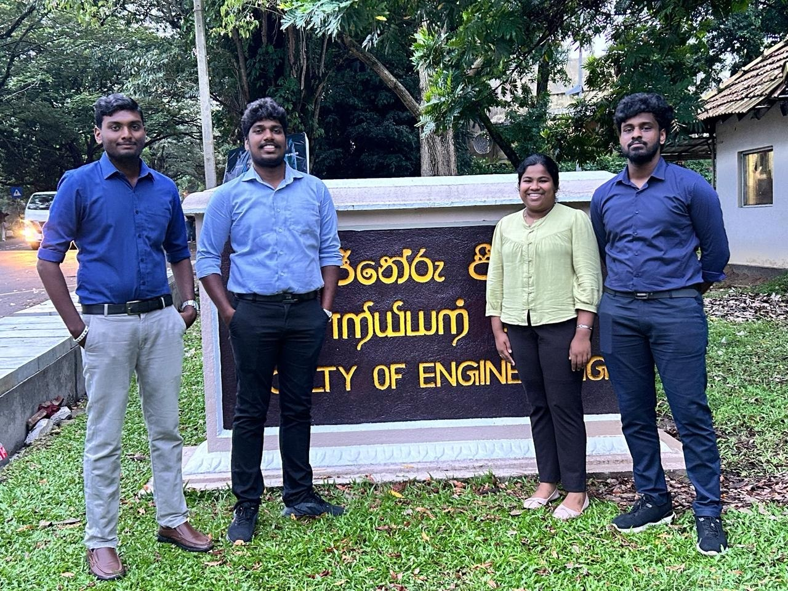
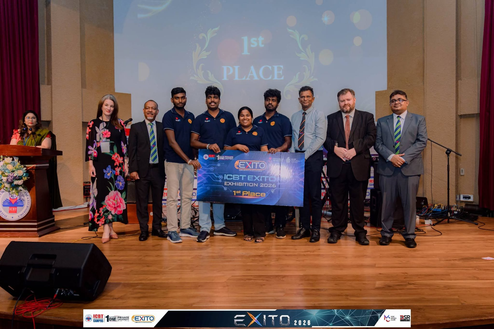

Important performance details can be difficult to observe
- Compression depth and rate
- Full chest recoil
- Pause and interruption time
- Hand placement and balance
- Consistency across a full session
Transforming conventional CPR manikins into intelligent, data-driven training systems through embedded sensing, local analytics, and real-time feedback.


Effective CPR practice needs timely, objective feedback. ResQ adds that capability without requiring institutions to replace every conventional manikin.
The time-sensitive path stays on the instructor’s local network. Optional cloud synchronization sits outside the critical training loop.
Hardware, firmware, desktop orchestration, dashboards, and data are designed as one integrated system.
A sensor-equipped chest overlay adds instrumentation to conventional CPR training setups.
Live compression depth, rate, recoil, interruption, count, and pressure-balance information.
Readiness checks establish baselines and validate sensor behavior before scored training begins.
Monitor connected manikins, readiness, sessions, and live trainee performance from one view.
Live coaching cues and after-session review help learners understand where to improve.
The core session workflow, persistence, and dashboards remain available without internet access.
Completed-session scoring, history, performance trends, and review are stored locally.
Supported local export endpoints provide portable session data for review and analysis.
Queued synchronization is being developed as an enhancement, never a requirement for live training.
Target ranges are configurable to align with the CPR training standard adopted by the institution.
Complete and incomplete recoil events are recorded across the session.
Pressure distribution supports hand-placement and balance feedback.
Manikins communicate through local Wi-Fi and MQTT. The instructor PC runs the broker, Spring Boot backend, SQLite database, and dashboards inside the Tauri LocalHub environment.
Last reviewed against the repository on 26 September 2026. Status labels separate implemented work from validation and future development.
Chest overlay, pressure sensing, Hall-effect sensing, controller, and custom electronics.
ESP-IDF state machine, configuration, connectivity, calibration, metrics, telemetry, and faults.
Tauri desktop host with bundled Java runtime, Mosquitto, Spring Boot, and local dashboards.
End-to-end firmware, MQTT, backend, SSE, persistence, and UI paths have repository test evidence.
Skills-lab engagement is documented; broader formal validation remains future work.
Synchronization is optional and non-blocking. It is not presented as production-complete.
Development progressed from feasibility and sensing experiments to an integrated local training platform and public project recognition.

Custom electronics, firmware behavior, and the complete telemetry pipeline were tested together.

The integrated prototype demonstrated the connection between sensing, LocalHub, and live dashboards.

ResQ received first place at the Inter-University Robotics & Innovation Challenge.
Five presentation links document the project from early proposal through the overall integrated system.
The complete product, engineering, and validation story in one presentation.
View presentationProposal validation, early sensing work, MVP integration, and the first live demonstration.
Working prototype refinement, validation, deployment, and final project communication.
Automated and physical testing are clearly separated. Formal clinical certification is not claimed.
Public milestones demonstrate the project’s technical execution, research relevance, and communication quality.
Inter-University Robotics & Innovation Challenge.
Business pitching competition at the University of Peradeniya.
Oral presentation at the international research symposium.
Selected for the ten-team Grand Finale.
ResQ is built for education, skills practice, supervised assessment, and engineering research—not patient care.
Live supervision and objective session review.
Reusable training stations with local control.
Portable feedback for structured practice.
Immediate coaching and understandable results.
Created by E/21 students from the Department of Computer Engineering, University of Peradeniya.